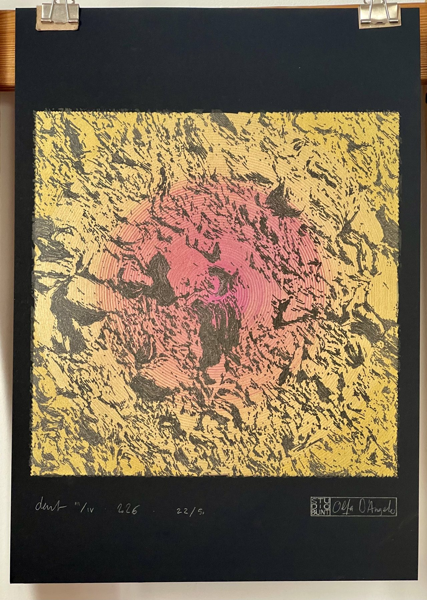

suicide mission · new
DART III/IV 22/50
The surface of the asteroid Dimorphos, drawn from the last images the DART probe sent before impact. Metallic copper and gold inks catch the light differently as you move around the drawing. Signed and numbered, sold with a certificate of authenticity.
| in series | 3 of 4 |
| 22 of 50 | |
| paper | Fabriano Black Black 300 g/m², A4 (21 × 29.7 cm) |
| inks | metallic india ink (Faber-Castell pitt — high lightfastness), black archival ink (Pigma Micron) |
| year | 2026 |
| includes | certificate of authenticity |
65 €
Black Nielsen A4 black mat frame. Anti-UV glass protects the inks from fading, and anti-reflective lets the metallic lines show their full shine, even in dark environments.
ask for this work